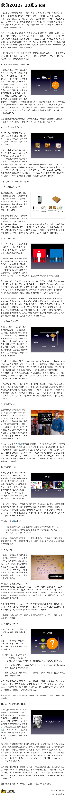

//@安猪安心做猪:推动社会企业家前进的不仅仅是某种新方法新技术的吸引力，甚至也不是为了解决某个群体的问题—他们要的不是让某个群体活下去，而是要让这个群体更自主、更有尊严地生存，要让限制这个群体的外在不公力量瓦解。这使得他们最终必然会面对并挑战社会不公平现象，并转化为持久的行动力。@安猪:【我的2012：10张Slide】这十张Slide记录了我这一年思维的历程：在某个的领域内如何发展出一种更真实的实践。这主要指我们的一公斤盒子项目，不过，我期望这个过程中所应用的一些思维方法和模式，也能够对更多人有用。原文链接： 网页链接 